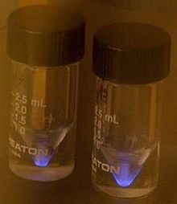

Actinium
|  | |||||||||||||||||||||||||||||||||||||||||||||||||||||||||||||||||||||||||||||||||||||||||||||||||||||||||||||||||||||||||||||||||||||||||||||||||||||||||||||||||||||||||||||||||||||||||||||||||||||||||||||||||||||||||||||||||||||
| General properties | |||||||||||||||||||||||||||||||||||||||||||||||||||||||||||||||||||||||||||||||||||||||||||||||||||||||||||||||||||||||||||||||||||||||||||||||||||||||||||||||||||||||||||||||||||||||||||||||||||||||||||||||||||||||||||||||||||||
|---|---|---|---|---|---|---|---|---|---|---|---|---|---|---|---|---|---|---|---|---|---|---|---|---|---|---|---|---|---|---|---|---|---|---|---|---|---|---|---|---|---|---|---|---|---|---|---|---|---|---|---|---|---|---|---|---|---|---|---|---|---|---|---|---|---|---|---|---|---|---|---|---|---|---|---|---|---|---|---|---|---|---|---|---|---|---|---|---|---|---|---|---|---|---|---|---|---|---|---|---|---|---|---|---|---|---|---|---|---|---|---|---|---|---|---|---|---|---|---|---|---|---|---|---|---|---|---|---|---|---|---|---|---|---|---|---|---|---|---|---|---|---|---|---|---|---|---|---|---|---|---|---|---|---|---|---|---|---|---|---|---|---|---|---|---|---|---|---|---|---|---|---|---|---|---|---|---|---|---|---|---|---|---|---|---|---|---|---|---|---|---|---|---|---|---|---|---|---|---|---|---|---|---|---|---|---|---|---|---|---|---|---|---|---|---|---|---|---|---|---|---|---|---|---|---|---|---|---|---|
| Name, symbol | actinium, Ac | ||||||||||||||||||||||||||||||||||||||||||||||||||||||||||||||||||||||||||||||||||||||||||||||||||||||||||||||||||||||||||||||||||||||||||||||||||||||||||||||||||||||||||||||||||||||||||||||||||||||||||||||||||||||||||||||||||||
| Pronunciation | /ækˈtɪniəm/ ak-TIN-nee-əm |
||||||||||||||||||||||||||||||||||||||||||||||||||||||||||||||||||||||||||||||||||||||||||||||||||||||||||||||||||||||||||||||||||||||||||||||||||||||||||||||||||||||||||||||||||||||||||||||||||||||||||||||||||||||||||||||||||||
| Appearance | silvery-white, glowing with an eerie blue light;[1] sometimes with a golden cast[2] | ||||||||||||||||||||||||||||||||||||||||||||||||||||||||||||||||||||||||||||||||||||||||||||||||||||||||||||||||||||||||||||||||||||||||||||||||||||||||||||||||||||||||||||||||||||||||||||||||||||||||||||||||||||||||||||||||||||
| Actinium in the periodic table | |||||||||||||||||||||||||||||||||||||||||||||||||||||||||||||||||||||||||||||||||||||||||||||||||||||||||||||||||||||||||||||||||||||||||||||||||||||||||||||||||||||||||||||||||||||||||||||||||||||||||||||||||||||||||||||||||||||
|
|||||||||||||||||||||||||||||||||||||||||||||||||||||||||||||||||||||||||||||||||||||||||||||||||||||||||||||||||||||||||||||||||||||||||||||||||||||||||||||||||||||||||||||||||||||||||||||||||||||||||||||||||||||||||||||||||||||
| Atomic number | 89 | ||||||||||||||||||||||||||||||||||||||||||||||||||||||||||||||||||||||||||||||||||||||||||||||||||||||||||||||||||||||||||||||||||||||||||||||||||||||||||||||||||||||||||||||||||||||||||||||||||||||||||||||||||||||||||||||||||||
| Standard atomic weight | (227) | ||||||||||||||||||||||||||||||||||||||||||||||||||||||||||||||||||||||||||||||||||||||||||||||||||||||||||||||||||||||||||||||||||||||||||||||||||||||||||||||||||||||||||||||||||||||||||||||||||||||||||||||||||||||||||||||||||||
| Element category | actinide, sometimes considered a transition metal | ||||||||||||||||||||||||||||||||||||||||||||||||||||||||||||||||||||||||||||||||||||||||||||||||||||||||||||||||||||||||||||||||||||||||||||||||||||||||||||||||||||||||||||||||||||||||||||||||||||||||||||||||||||||||||||||||||||
| Group, block | group n/a, f-block | ||||||||||||||||||||||||||||||||||||||||||||||||||||||||||||||||||||||||||||||||||||||||||||||||||||||||||||||||||||||||||||||||||||||||||||||||||||||||||||||||||||||||||||||||||||||||||||||||||||||||||||||||||||||||||||||||||||
| Period | period 7 | ||||||||||||||||||||||||||||||||||||||||||||||||||||||||||||||||||||||||||||||||||||||||||||||||||||||||||||||||||||||||||||||||||||||||||||||||||||||||||||||||||||||||||||||||||||||||||||||||||||||||||||||||||||||||||||||||||||
| Electron configuration | [Rn] 6d1 7s2 | ||||||||||||||||||||||||||||||||||||||||||||||||||||||||||||||||||||||||||||||||||||||||||||||||||||||||||||||||||||||||||||||||||||||||||||||||||||||||||||||||||||||||||||||||||||||||||||||||||||||||||||||||||||||||||||||||||||
| per shell | 2, 8, 18, 32, 18, 9, 2 | ||||||||||||||||||||||||||||||||||||||||||||||||||||||||||||||||||||||||||||||||||||||||||||||||||||||||||||||||||||||||||||||||||||||||||||||||||||||||||||||||||||||||||||||||||||||||||||||||||||||||||||||||||||||||||||||||||||
| Physical properties | |||||||||||||||||||||||||||||||||||||||||||||||||||||||||||||||||||||||||||||||||||||||||||||||||||||||||||||||||||||||||||||||||||||||||||||||||||||||||||||||||||||||||||||||||||||||||||||||||||||||||||||||||||||||||||||||||||||
| Phase | solid | ||||||||||||||||||||||||||||||||||||||||||||||||||||||||||||||||||||||||||||||||||||||||||||||||||||||||||||||||||||||||||||||||||||||||||||||||||||||||||||||||||||||||||||||||||||||||||||||||||||||||||||||||||||||||||||||||||||
| Melting point | 1500 K (1227 °C, 2240 °F) (estimated)[2] | ||||||||||||||||||||||||||||||||||||||||||||||||||||||||||||||||||||||||||||||||||||||||||||||||||||||||||||||||||||||||||||||||||||||||||||||||||||||||||||||||||||||||||||||||||||||||||||||||||||||||||||||||||||||||||||||||||||
| Boiling point | 3500±300 K (3200±300 °C, 5800±500 °F) (extrapolated)[2] | ||||||||||||||||||||||||||||||||||||||||||||||||||||||||||||||||||||||||||||||||||||||||||||||||||||||||||||||||||||||||||||||||||||||||||||||||||||||||||||||||||||||||||||||||||||||||||||||||||||||||||||||||||||||||||||||||||||
| Density near r.t. | 10 g·cm−3 | ||||||||||||||||||||||||||||||||||||||||||||||||||||||||||||||||||||||||||||||||||||||||||||||||||||||||||||||||||||||||||||||||||||||||||||||||||||||||||||||||||||||||||||||||||||||||||||||||||||||||||||||||||||||||||||||||||||
| Heat of fusion | 14 kJ·mol−1 | ||||||||||||||||||||||||||||||||||||||||||||||||||||||||||||||||||||||||||||||||||||||||||||||||||||||||||||||||||||||||||||||||||||||||||||||||||||||||||||||||||||||||||||||||||||||||||||||||||||||||||||||||||||||||||||||||||||
| Heat of vaporization | 400 kJ·mol−1 | ||||||||||||||||||||||||||||||||||||||||||||||||||||||||||||||||||||||||||||||||||||||||||||||||||||||||||||||||||||||||||||||||||||||||||||||||||||||||||||||||||||||||||||||||||||||||||||||||||||||||||||||||||||||||||||||||||||
| Molar heat capacity | 27.2 J·mol−1·K−1 | ||||||||||||||||||||||||||||||||||||||||||||||||||||||||||||||||||||||||||||||||||||||||||||||||||||||||||||||||||||||||||||||||||||||||||||||||||||||||||||||||||||||||||||||||||||||||||||||||||||||||||||||||||||||||||||||||||||
| Atomic properties | |||||||||||||||||||||||||||||||||||||||||||||||||||||||||||||||||||||||||||||||||||||||||||||||||||||||||||||||||||||||||||||||||||||||||||||||||||||||||||||||||||||||||||||||||||||||||||||||||||||||||||||||||||||||||||||||||||||
| Oxidation states | 3 (a neutral oxide) | ||||||||||||||||||||||||||||||||||||||||||||||||||||||||||||||||||||||||||||||||||||||||||||||||||||||||||||||||||||||||||||||||||||||||||||||||||||||||||||||||||||||||||||||||||||||||||||||||||||||||||||||||||||||||||||||||||||
| Electronegativity | Pauling scale: 1.1 | ||||||||||||||||||||||||||||||||||||||||||||||||||||||||||||||||||||||||||||||||||||||||||||||||||||||||||||||||||||||||||||||||||||||||||||||||||||||||||||||||||||||||||||||||||||||||||||||||||||||||||||||||||||||||||||||||||||
| Ionization energies | 1st: 499 kJ·mol−1 2nd: 1170 kJ·mol−1 |
||||||||||||||||||||||||||||||||||||||||||||||||||||||||||||||||||||||||||||||||||||||||||||||||||||||||||||||||||||||||||||||||||||||||||||||||||||||||||||||||||||||||||||||||||||||||||||||||||||||||||||||||||||||||||||||||||||
| Covalent radius | 215 pm | ||||||||||||||||||||||||||||||||||||||||||||||||||||||||||||||||||||||||||||||||||||||||||||||||||||||||||||||||||||||||||||||||||||||||||||||||||||||||||||||||||||||||||||||||||||||||||||||||||||||||||||||||||||||||||||||||||||
| Miscellanea | |||||||||||||||||||||||||||||||||||||||||||||||||||||||||||||||||||||||||||||||||||||||||||||||||||||||||||||||||||||||||||||||||||||||||||||||||||||||||||||||||||||||||||||||||||||||||||||||||||||||||||||||||||||||||||||||||||||
| Crystal structure | face-centered cubic (fcc)
 |
||||||||||||||||||||||||||||||||||||||||||||||||||||||||||||||||||||||||||||||||||||||||||||||||||||||||||||||||||||||||||||||||||||||||||||||||||||||||||||||||||||||||||||||||||||||||||||||||||||||||||||||||||||||||||||||||||||
| Thermal conductivity | 12 W·m−1·K−1 | ||||||||||||||||||||||||||||||||||||||||||||||||||||||||||||||||||||||||||||||||||||||||||||||||||||||||||||||||||||||||||||||||||||||||||||||||||||||||||||||||||||||||||||||||||||||||||||||||||||||||||||||||||||||||||||||||||||
| CAS Registry Number | 7440-34-8 | ||||||||||||||||||||||||||||||||||||||||||||||||||||||||||||||||||||||||||||||||||||||||||||||||||||||||||||||||||||||||||||||||||||||||||||||||||||||||||||||||||||||||||||||||||||||||||||||||||||||||||||||||||||||||||||||||||||
| History | |||||||||||||||||||||||||||||||||||||||||||||||||||||||||||||||||||||||||||||||||||||||||||||||||||||||||||||||||||||||||||||||||||||||||||||||||||||||||||||||||||||||||||||||||||||||||||||||||||||||||||||||||||||||||||||||||||||
| Discovery and first isolation | Friedrich Oskar Giesel (1902) | ||||||||||||||||||||||||||||||||||||||||||||||||||||||||||||||||||||||||||||||||||||||||||||||||||||||||||||||||||||||||||||||||||||||||||||||||||||||||||||||||||||||||||||||||||||||||||||||||||||||||||||||||||||||||||||||||||||
| Most stable isotopes | |||||||||||||||||||||||||||||||||||||||||||||||||||||||||||||||||||||||||||||||||||||||||||||||||||||||||||||||||||||||||||||||||||||||||||||||||||||||||||||||||||||||||||||||||||||||||||||||||||||||||||||||||||||||||||||||||||||
|
|||||||||||||||||||||||||||||||||||||||||||||||||||||||||||||||||||||||||||||||||||||||||||||||||||||||||||||||||||||||||||||||||||||||||||||||||||||||||||||||||||||||||||||||||||||||||||||||||||||||||||||||||||||||||||||||||||||
{kind=link}
Actinium is a radioactive chemical element with symbol Ac (not to be confused with the abbreviation for an acetyl group) and atomic number 89, which was discovered in 1899. It was the first non-primordial radioactive element to be isolated. Polonium, radium and radon were observed before actinium, but they were not isolated until 1902. Actinium gave the name to the actinide series, a group of 15 similar elements between actinium and lawrencium in the periodic table.
A soft, silvery-white radioactive metal, actinium reacts rapidly with oxygen and moisture in air forming a white coating of actinium oxide that prevents further oxidation. As with most lanthanides and actinides, actinium assumes oxidation state +3 in nearly all its chemical compounds. Actinium is found only in traces in uranium and thorium ores as the isotope 227Ac, which decays with a half-life of 21.772 years, predominantly emitting beta and sometimes alpha particles, and 228Ac, which is beta active with a half-life of 6.15 hours. One tonne of natural uranium in ore contains about 0.2 milligrams of actinium-227, and one tonne of natural thorium contains about 5 nanograms of actinium-228. The close similarity of physical and chemical properties of actinium and lanthanum makes separation of actinium from the ore impractical. Instead, the element is prepared, in milligram amounts, by the neutron irradiation of 226Ra in a nuclear reactor. Owing to its scarcity, high price and radioactivity, actinium has no significant industrial use. Its current applications include a neutron source and an agent for radiation therapy targeting cancer cells in the body.
Contents
[hide]History[edit]
André-Louis Debierne, a French chemist, announced the discovery of a new element in 1899. He separated it from pitchblende residues left by Marie and Pierre Curie after they had extracted radium. In 1899, Debierne described the substance as similar to titanium[3] and (in 1900) as similar to thorium.[4] Friedrich Oskar Giesel independently discovered actinium in 1902[5] as a substance being similar to lanthanum and called it "emanium" in 1904.[6] After a comparison of the substances half-lives determined by Debierne,[7] Hariett Brooks in 1904, and Otto Hahn and Otto Sackur in 1905, Debierne's chosen name for the new element was retained because it had seniority.[8][9]
Articles published in the 1970s[10] and later[11] suggest that Debierne's results published in 1904 conflict with those reported in 1899 and 1900. This has led some authors to advocate that Giesel alone should be credited with the discovery.[2] A less confrontational vision of scientific discovery is proposed by Adloff.[11] He suggests that hindsight criticism of the early publications should be mitigated by the then nascent state of radiochemistry: highlighting the prudence of Debierne's claims in the original papers, he notes that nobody can contend that Debierne's substance did not contain actinium. Debierne, who is now considered by the vast majority of historians as the discoverer, lost interest in the element and left the topic. Giesel, on the other hand, can rightfully be credited with the first preparation of radiochemically pure actinium and with the identification of its atomic number 89.
The name actinium originates from the Ancient Greek aktis, aktinos (ακτίς, ακτίνος), meaning beam or ray.[12] Its symbol Ac is also used in abbreviations of other compounds that have nothing to do with actinium, such as acetyl, acetate[13] and sometimes acetaldehyde.[14]
Properties[edit]
Actinium is a soft, silvery-white,[15][16] radioactive, metallic element. Its estimated shear modulus is similar to that of lead.[17] Owing to its strong radioactivity, actinium glows in the dark with a pale blue light, which originates from the surrounding air ionized by the emitted energetic particles.[18] Actinium has similar chemical properties as lanthanum and other lanthanides, and therefore these elements are difficult to separate when extracting from uranium ores. Solvent extraction and ion chromatography are commonly used for the separation.[19]
The first element of the actinides, actinium gave the group its name, much as lanthanum had done for the lanthanides. The group of elements is more diverse than the lanthanides and therefore it was not until 1928 that Charles Janet proposed the most significant change to Dmitri Mendeleev's periodic table since the recognition of the lanthanides, by introducing the actinides, a move suggested again in 1945 by Glenn T. Seaborg.[20]
Actinium reacts rapidly with oxygen and moisture in air forming a white coating of actinium oxide that impedes further oxidation.[15] As with most lanthanides and actinides, actinium exists in the oxidation state +3, and the Ac3+ ions are colorless in solutions.[21] The oxidation state +3 originates from the [Rn]6d17s2 electronic configuration of actinium, with three valence electrons that are easily donated to give the stable closed-shell structure of the noble gas radon.[16] The rare oxidation state +2 is only known for actinium dihydride (AcH2).[22]
Chemical compounds[edit]
Only a limited number of actinium compounds are known including AcF3, AcCl3, AcBr3, AcOF, AcOCl, AcOBr, Ac2S3, Ac2O3 and AcPO4. Except for AcPO4, they are all similar to the corresponding lanthanum compounds and contain actinium in the oxidation state +3.[21][23] In particular, the lattice constants of the analogous lanthanum and actinium compounds differ by only a few percent.[24]
| [show]Formula | color | symmetry | space group | No | Pearson symbol | a (pm) | b (pm) | c (pm) | Z | density, g/cm3 |
|---|
Here a, b and c are lattice constants, No is space group number and Z is the number of formula units per unit cell. Density was not measured directly but calculated from the lattice parameters.
Oxides[edit]
Actinium oxide (Ac2O3) can be obtained by heating the hydroxide at 500 °C or the oxalate at 1100 °C, in vacuum. It crystal lattice is isotypic with the oxides of most trivalent rare-earth metals.[24]
Halides[edit]
Actinium trifluoride can be produced either in solution or in solid reaction. The former reaction is carried out at room temperature, by adding hydrofluoric acid to a solution containing actinium ions. In the latter method, actinium metal is treated with hydrogen fluoride vapors at 700 °C in an all-platinum setup. Treating actinium trifluoride with ammonium hydroxide at 900–1000 °C yields oxyfluoride AcOF. Whereas lanthanum oxyfluoride can be easily obtained by burning lanthanum trifluoride in air at 800 °C for an hour, similar treatment of actinium trifluoride yields no AcOF and only results in melting of the initial product.[24][29]
- AcF3 + 2 NH3 + H2O → AcOF + 2 NH4F
Actinium trichloride is obtained by reacting actinium hydroxide or oxalate with carbon tetrachloride vapors at temperatures above 960 °C. Similar to oxyfluoride, actinium oxychloride can be prepared by hydrolyzing actinium trichloride with ammonium hydroxide at 1000 °C. However, in contrast to the oxyfluoride, the oxychloride could well be synthesized by igniting a solution of actinium trichloride in hydrochloric acid with ammonia.[24]
Reaction of aluminium bromide and actinium oxide yields actinium tribromide:
- Ac2O3 + 2 AlBr3 → 2 AcBr3 + Al2O3
and treating it with ammonium hydroxide at 500 °C results in the oxybromide AcOBr.[24]
Other compounds[edit]
Actinium hydride was obtained by reduction of actinium trichloride with potassium at 300 °C, and its structure was deduced by analogy with the corresponding LaH2 hydride. The source of hydrogen in the reaction was uncertain.[30]
Mixing monosodium phosphate (NaH2PO4) with a solution of actinium in hydrochloric acid yields white-colored actinium phosphate hemihydrate (AcPO4·0.5H2O), and heating actinium oxalate with hydrogen sulfide vapors at 1400 °C for a few minutes results in a black actinium sulfide Ac2S3. It may possibly be produced by acting with a mixture of hydrogen sulfide and carbon disulfide on actinium oxide at 1000 °C.[24]
Isotopes[edit]
Naturally occurring actinium is composed of two radioactive isotopes; 227
Ac (from the radioactive family of 235
U) and 228
Ac (a granddaughter of 232
Th). 227
Ac decays mainly as a beta emitter with a very small energy, but in 1.38% of cases it emits an alpha particle, so it can readily be identified through alpha spectrometry.[2] Thirty-six radioisotopes have been identified, the most stable being 227
Ac with a half-life of 21.772 years, 225
Ac with a half-life of 10.0 days and 226
Ac with a half-life of 29.37 hours. All remaining radioactive isotopes have half-lives that are less than 10 hours and the majority of them have half-lives shorter than one minute. The shortest-lived known isotope of actinium is 217
Ac (half-life of 69 nanoseconds) which decays through alpha decay and electron capture. Actinium also has two known meta states.[31] The most significant isotopes for chemistry are 225Ac, 227Ac, and 228Ac.[2]
Purified 227
Ac comes into equilibrium with its decay products after about a half of year. It decays according to its 21.772-year half-life emitting mostly beta (98.62%) and some alpha particles (1.38%);[31] the successive decay products are part of the actinium series. Owing to the low available amounts, low energy of its beta particles (maximum 44.8 keV) and low intensity of alpha radiation, 227
Ac is difficult to detect directly by its emission and it is therefore traced via its decay products.[21] The isotopes of actinium range in atomic weight from 206 u (206
Ac) to 236 u (236
Ac).[31]
| Isotope | Production | Decay | Half-life |
|---|---|---|---|
| 221Ac | 232Th(d,9n)225Pa(α)→221Ac | α | 52 ms |
| 222Ac | 232Th(d,8n)226Pa(α)→222Ac | α | 5.0 s |
| 223Ac | 232Th(d,7n)227Pa(α)→223Ac | α | 2.1 min |
| 224Ac | 232Th(d,6n)228Pa(α)→224Ac | α | 2.78 hours |
| 225Ac | 232Th(n,γ)233Th(β−)→233Pa(β−)→233U(α)→229Th(α)→225Ra(β−)225Ac | α | 10 days |
| 226Ac | 226Ra(d,2n)226Ac | α, β− electron capture |
29.37 hours |
| 227Ac | 235U(α)→231Th(β−)→231Pa(α)→227Ac | α, β− | 21.77 years |
| 228Ac | 232Th(α)→228Ra(β−)→228Ac | β− | 6.15 hours |
| 229Ac | 228Ra(n,γ)229Ra(β−)→229Ac | β− | 62.7 min |
| 230Ac | 232Th(d,α)230Ac | β− | 122 s |
| 231Ac | 232Th(γ,p)231Ac | β− | 7.5 min |
| 232Ac | 232Th(n,p)232Ac | β− | 119 s |
Occurrence and synthesis[edit]

Actinium is found only in traces in uranium ores – one tonne of uranium in ore contains about 0.2 milligrams of 227Ac[32][33] - and in thorium ores, which contain about 5 nanograms of 228Ac per one tonne of thorium. The actinium isotope 227Ac is a transient member of the uranium-actinium series decay chain, which begins with the parent isotope 235U (or 239Pu) and ends with the stable lead isotope 207Pb. The 228Ac is a transient member of the thorium series decay chain, which begins with the parent isotope 232Th and ends with the stable lead isotope 208Pb. Another actinium isotope (225Ac) was transiently present in the neptunium series decay chain, beginning with 237Np (or 233U) and ending with thallium (205Tl) and near-stable bismuth (209Bi), but this chain existed only in the early Solar system, due to low half-life of neptunium-237.
The low natural concentration, and the close similarity of physical and chemical properties to those of lanthanum and other lanthanides, which are always abundant in actinium-bearing ores, render separation of actinium from the ore impractical, and complete separation was never achieved.[24] Instead, actinium is prepared, in milligram amounts, by the neutron irradiation of 226Ra in a nuclear reactor.[33][34]
The reaction yield is about 2% of the radium weight. 227Ac can further capture neutrons resulting in small amounts of 228Ac. After the synthesis, actinium is separated from radium and from the products of decay and nuclear fusion, such as thorium, polonium, lead and bismuth. The extraction can be performed with thenoyltrifluoroacetone-benzene solution from an aqueous solution of the radiation products, and the selectivity to a certain element is achieved by adjusting the pH (to about 6.0 for actinium).[32] An alternative procedure is anion exchange with an appropriate resin in nitric acid, which can result in a separation factor of 1,000,000 for radium and actinium vs. thorium in a two-stage process. Actinium can then be separated from radium, with a ratio of about 100, using a low cross-linking cation exchange resin and nitric acid as eluant.[35]
225Ac was first produced artificially at the Institute for Transuranium Elements (ITU) in Germany using a cyclotron and at St George Hospital in Sydney using a linac in 2000.[36] This rare isotope has potential applications in radiation therapy and is most efficiently produced by bombarding a radium-226 target with 20–30 MeV deuterium ions. This reaction also yields 226Ac which however decays with a half-life of 29 hours and thus does not contaminate 225Ac.[37]
Actinium metal has been prepared by the reduction of actinium fluoride with lithium vapor in vacuum at a temperature between 1100 and 1300 °C. Higher temperatures resulted in evaporation of the product and lower ones lead to an incomplete transformation. Lithium was chosen among other alkali metals because its fluoride is most volatile.[12][15]
Applications[edit]
Owing to its scarcity, high price and radioactivity, actinium currently has no significant industrial use.[12]
227Ac is highly radioactive and was therefore studied for use as an active element of radioisotope thermoelectric generators, for example in spacecraft. The oxide of 227Ac pressed with beryllium is also an efficient neutron source with the activity exceeding that of the standard americium-beryllium and radium-beryllium pairs.[38] In all those applications, 227Ac (a beta source) is merely a progenitor which generates alpha-emitting isotopes upon its decay. Beryllium captures alpha particles and emits neutrons owing to its large cross-section for the (α,n) nuclear reaction:
The 227AcBe neutron sources can be applied in a neutron probe – a standard device for measuring the quantity of water present in soil, as well as moisture/density for quality control in highway construction.[39][40] Such probes are also used in well logging applications, in neutron radiography, tomography and other radiochemical investigations.[41]
{kind=link}
225Ac is applied in medicine to produce 213Bi in a reusable generator[35] or can be used alone as an agent for radiation therapy, in particular targeted alpha therapy (TAT). This isotope has a half-life of 10 days that makes it much more suitable for radiation therapy than 213Bi (half-life 46 minutes). Not only 225Ac itself, but also its decay products emit alpha particles which kill cancer cells in the body. The major difficulty with application of 225Ac was that intravenous injection of simple actinium complexes resulted in their accumulation in the bones and liver for a period of tens of years. As a result, after the cancer cells were quickly killed by alpha particles from 225Ac, the radiation from the actinium and its decay products might induce new mutations. To solve this problem, 225Ac was bound to a chelating agent, such as citrate, ethylenediaminetetraacetic acid (EDTA) or diethylene triamine pentaacetic acid (DTPA). This reduced actinium accumulation in the bones, but the excretion from the body remained slow. Much better results were obtained with such chelating agents as HEHA(1,4,7,10,13,16-hexaazacyclohexadecane-N,N',N'`,N'``,N'``',N'``'`-hexaacetic acid)[42] or DOTA (1,4,7,10-tetraazacyclododecane-1,4,7,10-tetraacetic acid) coupled to trastuzumab, a monoclonal antibody that interferes with the HER2/neu receptor. The latter delivery combination was tested on mice and proved to be effective against leukemia, lymphoma, breast, ovarian, neuroblastoma and prostate cancers.[43][44][45]
The medium half-life of 227Ac (21.77 years) makes it very convenient radioactive isotope in modeling the slow vertical mixing of oceanic waters. The associated processes cannot be studied with the required accuracy by direct measurements of current velocities (of the order 50 meters per year). However, evaluation of the concentration depth-profiles for different isotopes allows estimating the mixing rates. The physics behind this method is as follows: oceanic waters contain homogeneously dispersed 235U. Its decay product, 231Pa, gradually precipitates to the bottom, so that its concentration first increases with depth and then stays nearly constant. 231Pa decays to 227Ac; however, the concentration of the latter isotope does not follow the 231Pa depth profile, but instead increases toward the sea bottom. This occurs because of the mixing processes which raise some additional 227Ac from the sea bottom. Thus analysis of both 231Pa and 227Ac depth profiles allows to model the mixing behavior.[46][47]
Precautions[edit]
227Ac is highly radioactive and experiments with it are carried out in a specially designed laboratory equipped with a glove box. When actinium trichloride is administered intravenously to rats, about 33% of actinium is deposited into the bones and 50% into the liver. Its toxicity is comparable to, but slightly lower than that of americium and plutonium.[48]
See also[edit]
References[edit]
- Jump up ^ Wall, Greg (8 September 2003). "C&EN: It's Elemental: The Periodic Table - Actinium". C&EN: It's Elemental: The Periodic Table. Chemical and Engineering News. Retrieved 2 June 2011.
- ^ Jump up to: a b c d e f Kirby, Harold W.; Morss, Lester R. (2006). "Actinium". The Chemistry of the Actinide and Transactinide Elements. p. 18. doi:10.1007/1-4020-3598-5_2. ISBN 978-1-4020-3555-5.
- Jump up ^ Debierne, André-Louis (1899). "Sur un nouvelle matière radio-active". Comptes rendus (in French) 129: 593–595.
- Jump up ^ Debierne, André-Louis (1900–1901). "Sur un nouvelle matière radio-actif – l'actinium". Comptes rendus (in French) 130: 906–908.
- Jump up ^ Giesel, Friedrich Oskar (1902). "Ueber Radium und radioactive Stoffe". Berichte der Deutschen Chemische Geselschaft (in German) 35 (3): 3608–3611. doi:10.1002/cber.190203503187.
- Jump up ^ Giesel, Friedrich Oskar (1904). "Ueber den Emanationskörper (Emanium)". Berichte der Deutschen Chemische Geselschaft (in German) 37 (2): 1696–1699. doi:10.1002/cber.19040370280.
- Jump up ^ Debierne, André-Louis (1904). "Sur l'actinium". Comptes rendus (in French) 139: 538–540.
- Jump up ^ Giesel, Friedrich Oskar (1904). "Ueber Emanium". Berichte der Deutschen Chemische Geselschaft (in German) 37 (2): 1696–1699. doi:10.1002/cber.19040370280.
- Jump up ^ Giesel, Friedrich Oskar (1905). "Ueber Emanium". Berichte der Deutschen Chemische Geselschaft (in German) 38 (1): 775–778. doi:10.1002/cber.190503801130.
- Jump up ^ Kirby, Harold W. (1971). "The Discovery of Actinium". Isis 62 (3): 290–308. doi:10.1086/350760. JSTOR 229943.
- ^ Jump up to: a b Adloff, J. P. (2000). "The centenary of a controversial discovery: actinium". Radiochim. Acta 88 (3–4_2000): 123–128. doi:10.1524/ract.2000.88.3-4.123.
- ^ Jump up to: a b c Hammond, C. R. The Elements in Lide, D. R., ed. (2005). CRC Handbook of Chemistry and Physics (86th ed.). Boca Raton (FL): CRC Press. ISBN 0-8493-0486-5.
- Jump up ^ Gilley, Cynthia Brooke; University of California, San Diego. Chemistry (2008). New convertible isocyanides for the Ugi reaction; application to the stereoselective synthesis of omuralide. ProQuest. p. 11. ISBN 978-0-549-79554-4. Retrieved 12 August 2011.
- Jump up ^ Reimers, Jeffrey R. (20 July 2011). Computational Methods for Large Systems: Electronic Structure Approaches for Biotechnology and Nanotechnology. John Wiley and Sons. p. 575. ISBN 978-0-470-48788-4. Retrieved 12 August 2011.
- ^ Jump up to: a b c d Stites, Joseph G.; Salutsky, Murrell L.; Stone, Bob D. (1955). "Preparation of Actinium Metal". J. Am. Chem. Soc. 77 (1): 237–240. doi:10.1021/ja01606a085.
- ^ Jump up to: a b Actinium, in Encyclopædia Britannica, 15th edition, 1995, p. 70
- Jump up ^ Frederick Seitz, David Turnbull Solid state physics: advances in research and applications, Academic Press, 1964 ISBN 0-12-607716-9 pp. 289–291
- Jump up ^ Richard A. Muller (12 April 2010). Physics and Technology for Future Presidents: An Introduction to the Essential Physics Every World Leader Needs to Know. Princeton University Press. pp. 136–. ISBN 978-0-691-13504-5. Retrieved 12 August 2011.
- Jump up ^ Katz, J. J.; Manning, W M (1952). "Chemistry of the Actinide Elements Annual Review of Nuclear Science". Annual Review of Nuclear Science 1: 245–262. Bibcode:1952ARNPS...1..245K. doi:10.1146/annurev.ns.01.120152.001333.
- Jump up ^ Seaborg, Glenn T. (1946). "The Transuranium Elements". Science 104 (2704): 379–386. Bibcode:1946Sci...104..379S. doi:10.1126/science.104.2704.379. JSTOR 1675046. PMID 17842184.
- ^ Jump up to: a b c Actinium, Great Soviet Encyclopedia (in Russian)
- ^ Jump up to: a b c Farr, J; Giorgi, A.L.; Bowman, M.G.; Money, R.K. (1961). "The crystal structure of actinium metal and actinium hydride". Journal of Inorganic and Nuclear Chemistry 18: 42. doi:10.1016/0022-1902(61)80369-2.
- Jump up ^ Sherman, Fried; Hagemann, French; Zachariasen, W. H. (1950). "The Preparation and Identification of Some Pure Actinium Compounds". Journal of the American Chemical Society 72 (2): 771–775. doi:10.1021/ja01158a034.
- ^ Jump up to: a b c d e f g h i j k l m n Fried, Sherman; Hagemann, French; Zachariasen, W. H. (1950). "The Preparation and Identification of Some Pure Actinium Compounds". Journal of the American Chemical Society 72 (2): 771. doi:10.1021/ja01158a034.
- ^ Jump up to: a b Zachariasen, W. H. (1949). "Crystal chemical studies of the 5f-series of elements. XII. New compounds representing known structure types". Acta Crystallographica 2 (6): 388. doi:10.1107/S0365110X49001016.
- Jump up ^ Zachariasen, W. H. (1949). "Crystal chemical studies of the 5f-series of elements. VI. The Ce2S3-Ce3S4 type of structure". Acta Crystallographica 2: 57. doi:10.1107/S0365110X49000126.
- Jump up ^ Meyer, p. 71
- ^ Jump up to: a b Zachariasen, W. H. (1948). "Crystal chemical studies of the 5f-series of elements. I. New structure types". Acta Crystallographica 1 (5): 265. doi:10.1107/S0365110X48000703.
- ^ Jump up to: a b Meyer, pp. 87–88
- Jump up ^ Meyer, p. 43
- ^ Jump up to: a b c Audi, Georges; Bersillon, O.; Blachot, J.; Wapstra, A.H. (2003). "The NUBASE Evaluation of Nuclear and Decay Properties". Nuclear Physics A (Atomic Mass Data Center) 729: 3–128. Bibcode:2003NuPhA.729....3A. doi:10.1016/j.nuclphysa.2003.11.001.
- ^ Jump up to: a b Hagemann, French (1950). "The Isolation of Actinium". Journal of the American Chemical Society 72 (2): 768. doi:10.1021/ja01158a033.
- ^ Jump up to: a b Greenwood, Norman N.; Earnshaw, Alan (1997). Chemistry of the Elements (2nd ed.). Butterworth-Heinemann. p. 946. ISBN 0080379419.
- Jump up ^ Emeleus, H. J. (July 1987). Advances in inorganic chemistry and radiochemistry. Academic Press. pp. 16–. ISBN 978-0-12-023631-2. Retrieved 12 August 2011.
- ^ Jump up to: a b Bolla, Rose A.; Malkemus, D; Mirzadeh, S (2005). "Production of actinium-225 for alpha particle mediated radioimmunotherapy". Applied Radiation and Isotopes 62 (5): 667–679. doi:10.1016/j.apradiso.2004.12.003. PMID 15763472.
- Jump up ^ Melville, G; Allen, Bj (2009). "Cyclotron and linac production of Ac-225". Applied radiation and isotopes 67 (4): 549–55. doi:10.1016/j.apradiso.2008.11.012. PMID 19135381.
- Jump up ^ Russell, Pamela J.; Jackson, Paul and Kingsley, Elizabeth Anne Prostate cancer methods and protocols, Humana Press, 2003, ISBN 0-89603-978-1, p. 336
- Jump up ^ Russell, Alan M. and Lee, Kok Loong Structure-property relations in nonferrous metals, Wiley, 2005, ISBN 0-471-64952-X, pp. 470–471
- Jump up ^ Majumdar, D. K. Irrigation Water Management: Principles and Practice, 2004 ISBN 81-203-1729-7 p. 108
- Jump up ^ Chandrasekharan, H. and Gupta, Navindu Fundamentals of Nuclear Science – Application in Agriculture, 2006 ISBN 81-7211-200-9 pp. 202 ff
- Jump up ^ Dixon, W.R.; Bielesch, Alice; Geiger, K. W. (1957). "Neutron Spectrum of an Actinium–Beryllium Source". Can. J. Phys./Rev. Can. Phys. 35 (6): 699–702. Bibcode:1957CaJPh..35..699D. doi:10.1139/p57-075.
- Jump up ^ "Improved in Vivo Stability of Actinium-225 Macrocyclic Complexes".
- Jump up ^ McDevitt, Michael R.; Ma, Dangshe; Lai, Lawrence T. et al. (2001). "Tumor Therapy with Targeted Atomic Nanogenerators" (PDF). Science 294 (5546): 1537–1540. Bibcode:2001Sci...294.1537M. doi:10.1126/science.1064126. PMID 11711678.
- Jump up ^ Borchardt, Paul E. et al. (2003). "Targeted Actinium-225 in Vivo Generators for Therapy of Ovarian Cancer" (PDF). Cancer Research 63 (16): 5084–5090. PMID 12941838.
- Jump up ^ Ballangrud, A. M. et al. (2004). "Alpha-particle emitting atomic generator (Actinium-225)-labeled trastuzumab (herceptin) targeting of breast cancer spheroids: efficacy versus HER2/neu expression". Clinical cancer research : an official journal of the American Association for Cancer Research 10 (13): 4489–97. doi:10.1158/1078-0432.CCR-03-0800. PMID 15240541.
- Jump up ^ Nozaki, Yoshiyuki (1984). "Excess 227Ac in deep ocean water". Nature 310 (5977): 486. Bibcode:1984Natur.310..486N. doi:10.1038/310486a0.
- Jump up ^ Geibert, W.; Rutgers Van Der Loeff, M.M.; Hanfland, C.; Dauelsberg, H.-J. (2002). "Actinium-227 as a deep-sea tracer: sources, distribution and applications". Earth and Planetary Science Letters 198: 147. Bibcode:2002E&PSL.198..147G. doi:10.1016/S0012-821X(02)00512-5.
- Jump up ^ Langham, W.; Storer, J. (1952). "Toxicology of Actinium Equilibrium Mixture". Los Alamos Scientific Lab.: Technical Report. doi:10.2172/4406766.
Bibliography[edit]
- Meyer, Gerd and Morss, Lester R. Synthesis of lanthanide and actinide compounds, Springer, 1991, ISBN 0-7923-1018-7
External links[edit]
- Actinium at The Periodic Table of Videos (University of Nottingham)
- NLM Hazardous Substances Databank – Actinium, Radioactive
- Actinium in Haire, Richard G. (2006). Morss; Edelstein, Norman M.; Fuger, Jean, eds. The Chemistry of the Actinide and Transactinide Elements (3rd ed.). Dordrecht, The Netherlands: Springer. ISBN 1-4020-3555-1.
| [hide] Periodic table (Large cells) | |||||||||||||||||||||||||||||||||
|---|---|---|---|---|---|---|---|---|---|---|---|---|---|---|---|---|---|---|---|---|---|---|---|---|---|---|---|---|---|---|---|---|---|
| 1 | 2 | 3 | 4 | 5 | 6 | 7 | 8 | 9 | 10 | 11 | 12 | 13 | 14 | 15 | 16 | 17 | 18 | ||||||||||||||||
| 1 | H | He | |||||||||||||||||||||||||||||||
| 2 | Li | Be | B | C | N | O | F | Ne | |||||||||||||||||||||||||
| 3 | Na | Mg | Al | Si | P | S | Cl | Ar | |||||||||||||||||||||||||
| 4 | K | Ca | Sc | Ti | V | Cr | Mn | Fe | Co | Ni | Cu | Zn | Ga | Ge | As | Se | Br | Kr | |||||||||||||||
| 5 | Rb | Sr | Y | Zr | Nb | Mo | Tc | Ru | Rh | Pd | Ag | Cd | In | Sn | Sb | Te | I | Xe | |||||||||||||||
| 6 | Cs | Ba | La | Ce | Pr | Nd | Pm | Sm | Eu | Gd | Tb | Dy | Ho | Er | Tm | Yb | Lu | Hf | Ta | W | Re | Os | Ir | Pt | Au | Hg | Tl | Pb | Bi | Po | At | Rn | |
| 7 | Fr | Ra | Ac | Th | Pa | U | Np | Pu | Am | Cm | Bk | Cf | Es | Fm | Md | No | Lr | Rf | Db | Sg | Bh | Hs | Mt | Ds | Rg | Cn | 113 | Fl | 115 | Lv | 117 | 118 | |
|
|
|||||||||||||||||||||||||||||||||
|